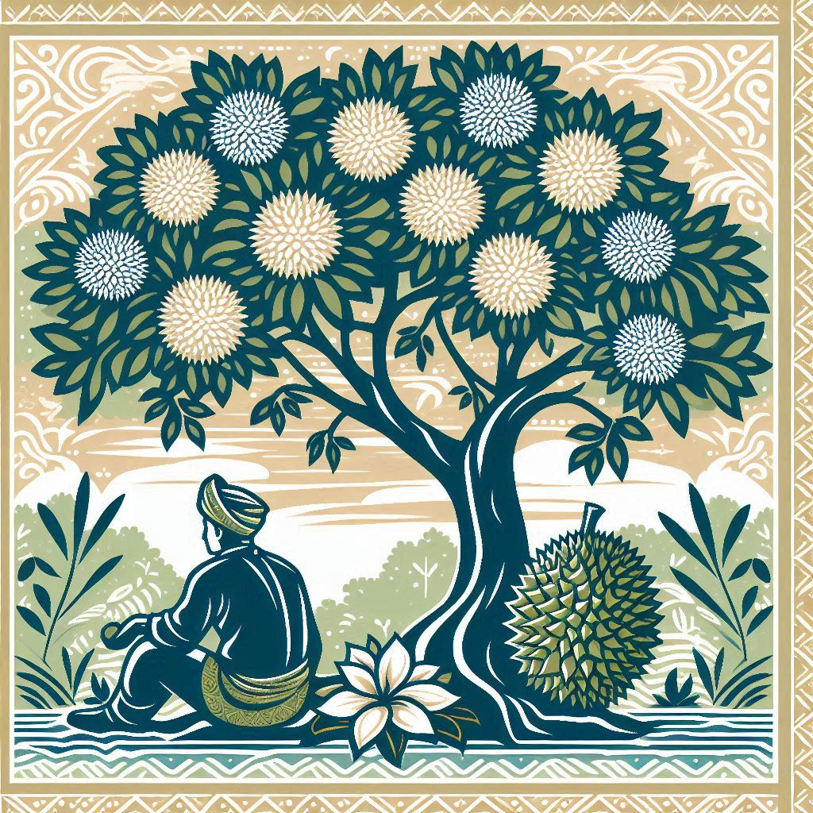
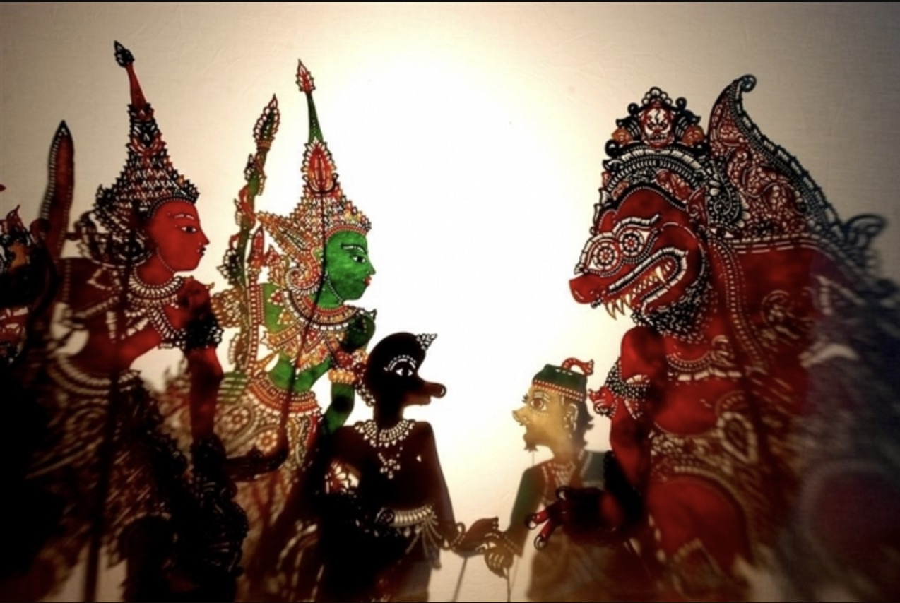
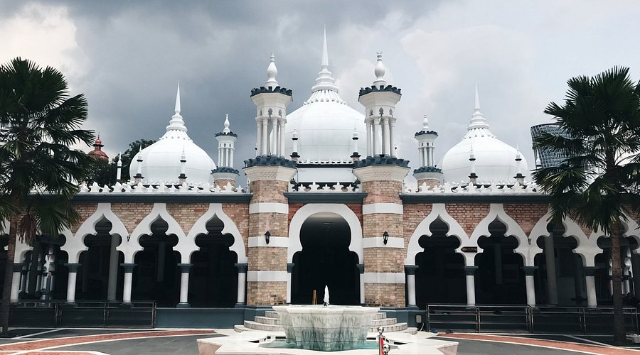
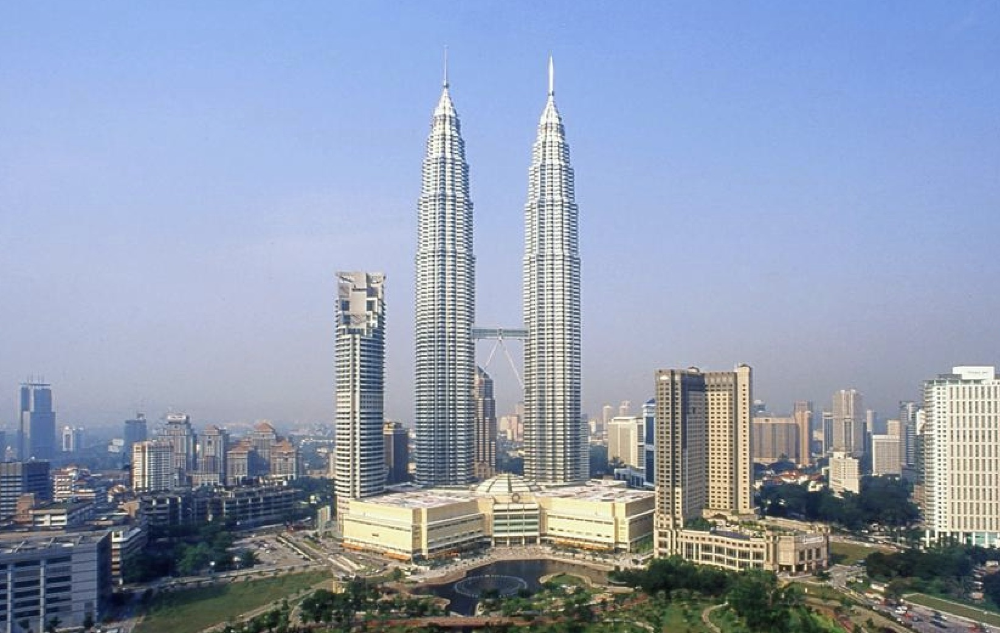
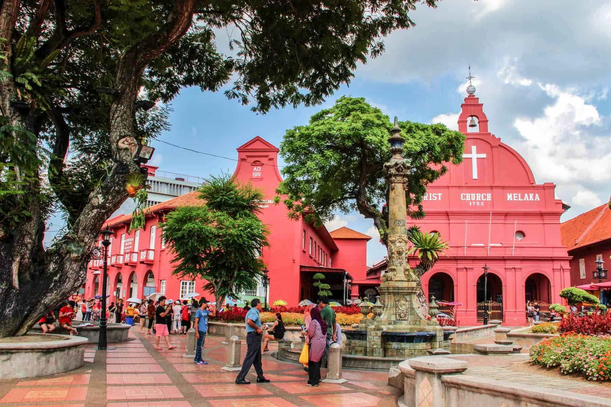
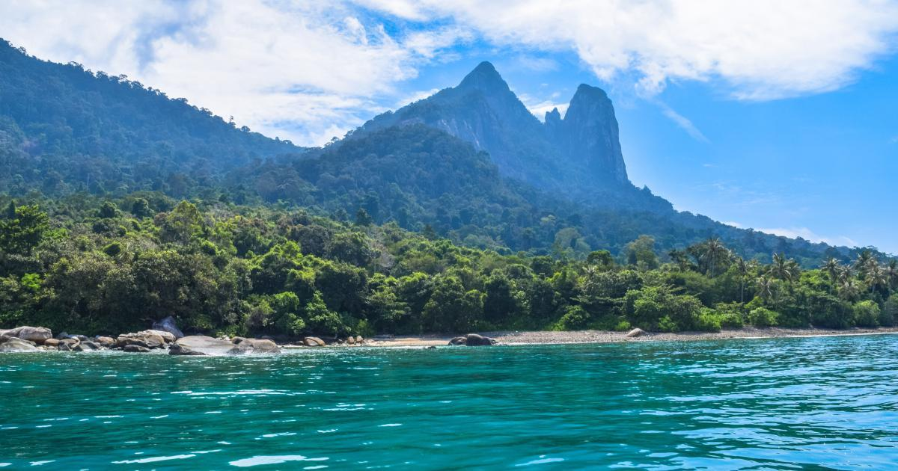
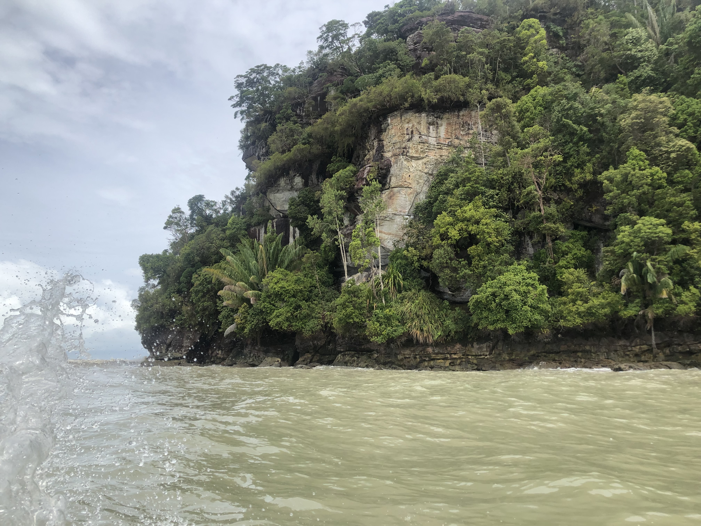

Current Weather in Kuala Lumpur
Loading weather...
Malaysian Culture and Art Forms
Malaysia is a melting pot of cultures, with Malay, Chinese, Indian, and indigenous influences shaping its unique identity. Here are some highlights:
- Music - Listen to traditional instruments like the gamelan and rebana. Here's some Malaysian pop by renowned artists such as Zainal Abidin and Siti Nurhaliza:
- Crafts - Discover intricate batik textiles, songket weaving, and traditional woodcarving. 
- Traditional Dance - Experience the grace of Malay dances like Joget and Zapin, or the vibrant Indian Bharatanatyam and Chinese Lion Dance.
- Wayang Kulit - A traditional shadow puppet theater that tells stories from epics like the Ramayana and Mahabharata. 
-
Festivals - Celebrate cultural events like Hari Raya, Chinese New Year, Deepavali, and Harvest Festival (Pesta Kaamatan).

{kind=link}
{kind=link}
Malaysian Legends and Folklore
Malaysia is rich with legends and folklore that reflect its cultural heritage. Here are some iconic characters:
- Hang Tuah - A legendary warrior and symbol of Malay loyalty and bravery. His famous quote, "Takkan Melayu Hilang di Dunia" (The Malays will never vanish from the world), is still celebrated today. Watch the P. Ramlee classic Hang Tuah.
- Sang Kancil - The clever mousedeer is a popular figure in Malay folklore, often depicted outsmarting larger animals. Stories of Sang Kancil teach lessons about wit and resourcefulness. Sang Kancil and the Abandoned Well is just one of those tales of cunning!
Well-Known Cities and Places to Visit in Malaysia
Peninsular Malaysia
-
Kuala Lumpur - The bustling capital city with a mix of modernity and tradition.
- Downtown KL - Explore Masjed Jamek, Dataran Merdeka, the Islamic Arts Museum, and the Majestic Hotel. 
- National Museum of Malaysia - A great introduction to the country's history. Visit here.
- Central Market (Pasar Seni) - A historical and cultural hub for crafts and souvenirs.
- Batu Caves - A Hindu shrine set in a dramatic mountain landscape. Directions here.

- Chinatown - Visit the Chan She Shu Yuen Clan Ancestral Hall or explore Petaling Jaya for everyday Chinese Malaysian life.
- Brickfields - Known as Little India, with vibrant architecture and culture.
- Petronas Twin Towers - Iconic skyscrapers with a stunning view. 
- Ilham Gallery - A contemporary art gallery near Petronas Towers. Visit Ilham Gallery.
- Kuala Lumpur Bird Park - A serene spot for nature lovers. Learn more at KL Bird Park.

- Bangsar - A walkable expat neighborhood with local eateries like Devis Corner for banana leaf meals.
- Penang/Georgetown - A UNESCO World Heritage Site with rich overseas Chinese culture. Explore Georgetown.

- Ipoh - A city with a strong tin mining history. Visit the Han Chin Pet Soo Museum.
- Melaka - A historical city with Peranakan culture. Learn more here. 
- Cameron Highlands - A cool highland retreat known for its tea plantations, strawberry farms, and hiking trails. Learn more about Cameron Highlands.
- Langkawi Geopark - A UNESCO-listed geopark with stunning landscapes, mangrove forests, and pristine beaches. Explore Langkawi Geopark.
- Tioman and Perhentian Islands - Beautiful beaches less touristy than Langkawi. 
{kind=link}
{kind=link}
{kind=link}
{kind=link}
East Malaysia (Borneo)
- Bako National Park - Located in Sarawak, this park is known for its diverse wildlife, hiking trails, and unique coastal formations. Learn more about Bako National Park. 
- Mulu Caves - A UNESCO World Heritage Site in Sarawak. Visit Mulu Caves.

- Kinabatangan River - Located in Sabah, this river is famous for its wildlife, including proboscis monkeys, pygmy elephants, and orangutans. Discover Kinabatangan River.
-
Mount Kinabalu - The highest peak in Southeast Asia. Explore Mount Kinabalu.

{kind=link}
Additional Resources
Picture Credits
- Cameron Highlands picture by Audley Travel
- Durian Batik image was AI generated
- Wayang Kulit image from Eksentrika
- Ramadan in downtown image from Xinhuanet
- Masjed Jamek image from Tripadvisor
- Batu Caves image from Headout
- Petronas Towers image from Thornton Tomasetti
- KL Bird Park image from Headout
- Penang Kek Lok Si Temple image from Airbnb
- Christ Church Melaka image from Borders of Adventure
- Tioman and Perhentian image from Inside Asia Tours
- Bako National Park - my own photo
- Mulu Caves image from Mulu National Park
- Mt Kinabalu image from Sabah Travel Guide